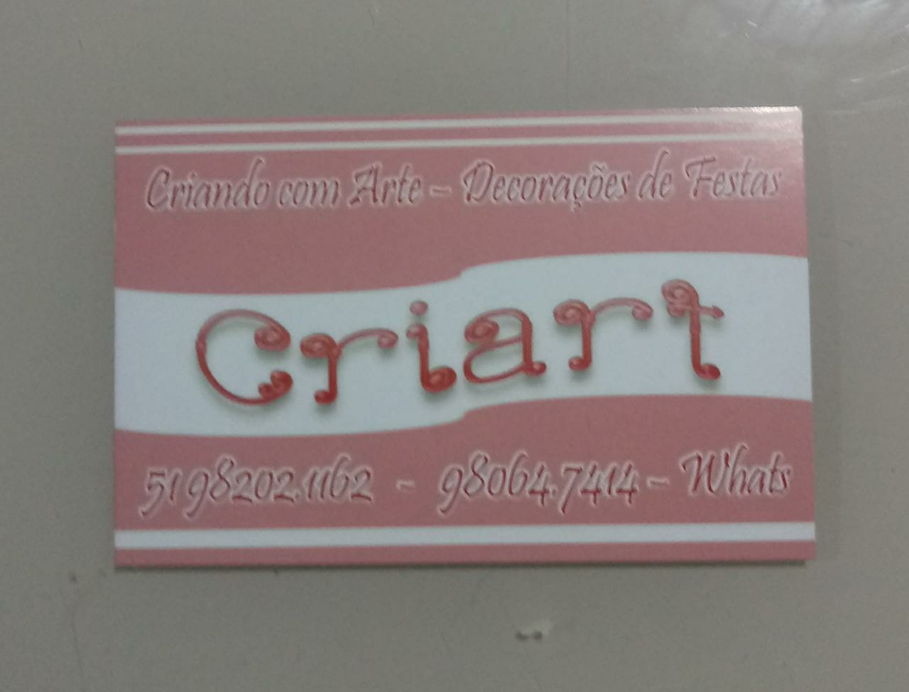

Login
HOME
PERSONALIZADOS
OUTROS SERVIÇOS
CONTATO
SOBRE
Outros Serviços:

Encadernação
Plastificação
Xerox colorido e preto-e-branco
Impressão de trabalhos escolares com valores diferenciados
Pesquisa e impressão de documentos:
Alvará de folha corrida;
Certidão de bons antecedentes;
Declaração de quitação junto à Secretaria da Fazenda;
Segunda via de boletos;
Etc.